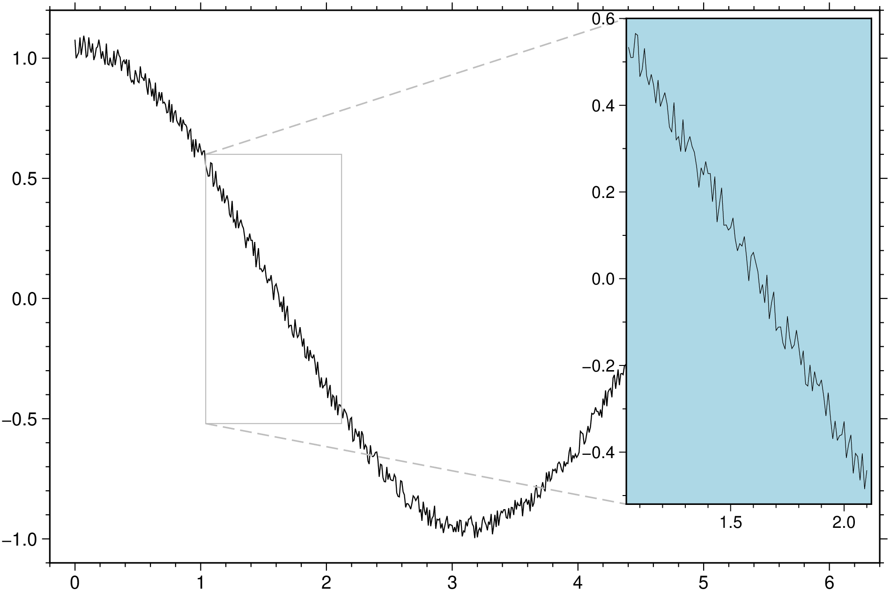
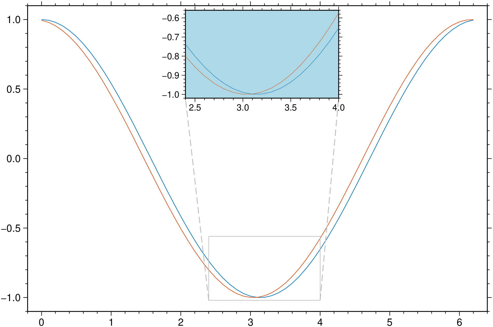
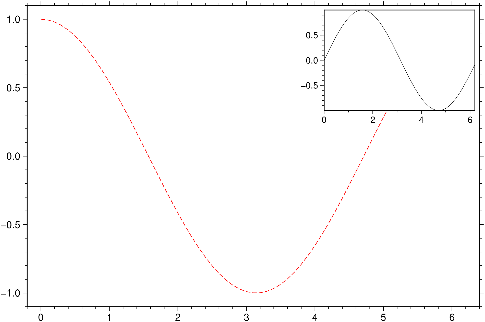
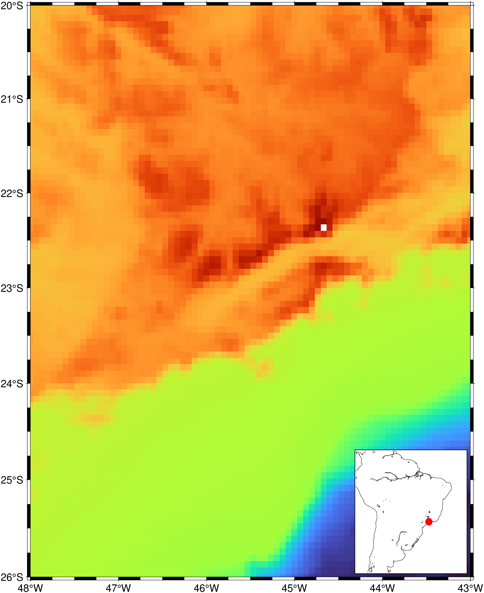
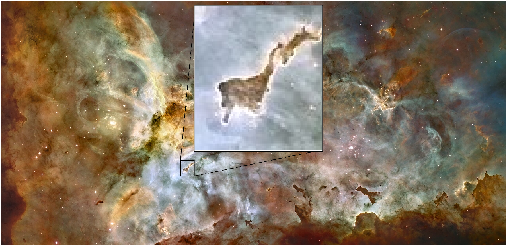
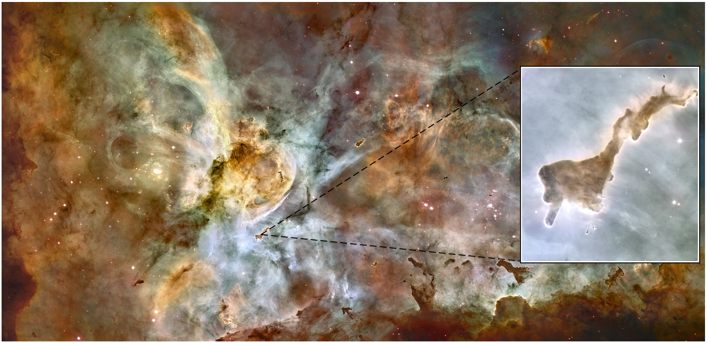

using GMT
t = 0:0.01:2pi;
plot(t, cos.(t).+rand(length(t))*0.1, inset=(zoom=(pi,pi/4), box=(fill=:lightblue,)), show=true)
The inset function can be used as an option to the plot, basemap and grdimage functions. While not all the possibilities offered by the inset function are available in this case, because all functionalities must be requested via a nested call, it offers quite nice features that allow creating elaborated figures with very short commands.
First example shows how to make a zoom over a region of a synthetic plot. Notice how we use here the inset command as if it was just another option of the plot function. The location of the inset window is found with a heuristic that tries to place them above the zoom window (to avoid overlapping the plotted line) or in one corner when previous condition is not possible.
using GMT
t = 0:0.01:2pi;
plot(t, cos.(t).+rand(length(t))*0.1, inset=(zoom=(pi,pi/4), box=(fill=:lightblue,)), show=true)
If we select the zooming interval over a region where the zoom window has a different aspect ratio (such that as in this case it would overlap the inset located above it) the inset location jumps to another location. In case of need the inset size is scaled down such that it doesn’t go out of the main figure dimensions. But all of this can be manually controlled by using the pos or position sub-options.
using GMT
t = 0:0.01:2pi;
plot(t, cos.(t).+rand(length(t))*0.1, inset=(zoom=(pi/2,pi/6), box=(fill=:lightblue,)), show=true)
We can make zooms on more than one line but for it to work we must plot them as a multi-column dataset. That is, we must plot all the lines in one command like the next example. Lines existing in the figure resulting from previous plot commands (case in which we should have used the plot! form) are ignored.
using GMT
t = 0:0.1:2pi;
plot([t cos.(t) cos.(t.+0.1)], multi=true, inset=(zoom=(pi,pi/4), box=(fill=:lightblue,)), show=true)
If we want to plot another curve instead of zooming a part of the one in the main figure we pass the data of that second curve as argument to the inset option. Here, for simplicity, we will show a sinusoid over the same domain.
using GMT
t = 0:0.1:2pi;
plot(t, cos.(t), inset=([t sin.(t)]), lc=:red, ls=:dash, show=true)
In the above examples, selecting the zoom coordinates was simple but when the xx axis represents time, things get a bit more complicated because time is in fact stored as a number of seconds since a reference epoch. And there are lots of seconds in an interval. So, when xx axis has time, we must provide the zooming interval in a date or date-time format. Currently the program accepts time in the ISO “yyyy-mm-ddTHH:MM:SS”, “dd-o-yyyy” or “dd-o-yy” formats. When using the ISO format the time, that is the part that includes and follows the T...., is optional
using GMT
D = gmtread("@RHAT_price.csv", o="0,2", par=(FORMAT_DATE_IN="dd-o-yy",))
viz(D, inset=(zoom=("2004-01-01","2005-01-01"),))
For an inset with a rectangle showing the zone that is displayed in main figure, use the rect (or rectangle) option. Arguments in this example mean a line thickness of 2 points and a red line color. rect=true would have plotted a thinner (0.75 pt) blue rectangle.
using GMT
G = grdcut("@earth_relief_04m", limits=(-48, -43, -26, -20));
viz(G, cmap=:world, J=:merc, inset=(coast, limits=(-80,-28,-43,10), J=:merc, shore=true, ocean=:blue, rect=(2,:red)))
But if instead of a rectangle we want to plot a symbol, let’s say, a red circle, we can call the plot function inside inset. In next example we also ask to plot the inset at bottom right (:BR) instead of the default top right (:TR) default position. If wished, things can be made more complex by passing a full featured GMTdataset to the plot function. e.g., plot=(data=D, ...)
using GMT
G = grdcut("@earth_relief_04m", limits=(-48, -43, -26, -20));
viz(G, J=:merc,
inset=(coast, limits=(-80,-28,-43,10), J=:merc, shore=true, pos=(anchor=:BR,),
plot=(data=[-45.5 -23], marker=:circ, fill=:red))
)
Next examples show how we can zoom out a region of an image and show it in the inset. We will use as example the image containing the “Finger of God” Bok globule in the Carina Nebula. We download the images directly from the Wikipedia site. The first example lets the inset location algorithm choose where to put the inset window. In the second we decide that ourselves.
using GMT
im = gmtread("https://upload.wikimedia.org/wikipedia/commons/thumb/f/f8/NGC_3372a-full.jpg/2560px-NGC_3372a-full.jpg");
viz(im, inset=(zoom=(910,980,350,430),))
Hmm, the above figure is nice, but the finger is a bit fuzzy. The issue is the image is somewhat low resolution. The Wikipedia page has a high-resolution image but it’s a 200 MB jpeg compressed image. Too big to use in these examples. But we can download only the finger and add it as the inset. In this case we don’t have a rectangle to zoom out (because we are using a different image in the inset) but still want to indicate what zone of the base image is shown in higher resolution. For that, we use the pzoom option (that stands for pseudo-zoom), which expects a x,y location only. Since these images are not referenced, we use rows and column numbers (counting from lower left corner) as coordinates.
using GMT
im = gmtread("https://upload.wikimedia.org/wikipedia/commons/thumb/f/f8/NGC_3372a-full.jpg/2560px-NGC_3372a-full.jpg");
dedo = gdaltranslate("https://upload.wikimedia.org/wikipedia/commons/f/f8/NGC_3372a-full.jpg", srcwin=1,
limits=(10580, 11360, 9410, 10270));
viz(im, inset=(dedo, pzoom=(945, 390), pos=(anchor=:MR,)))